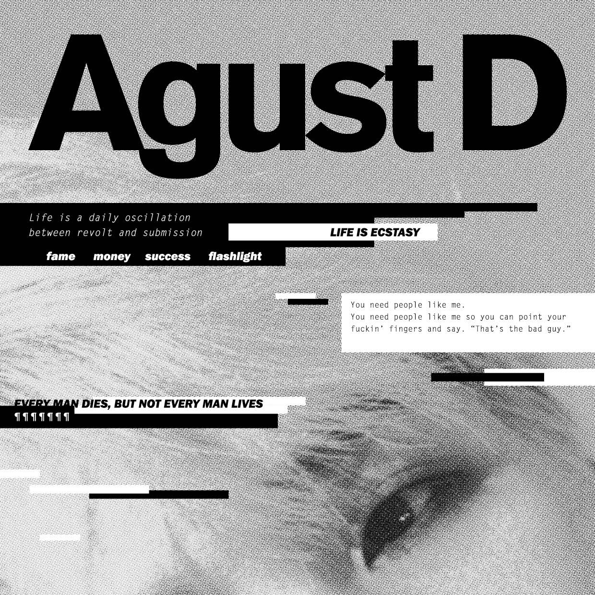

2016.08.15
Agust D

01 Intro
:
DT Suga (ft. DJ Friz)
02 Agust D
03 Give It To Me
04 Skit
05 치리사일사팔 (724148)
06 140503 새벽에
07 마지막
08 Tony Montana (Ft. Yankie)
09 Interlude
;
Dream
:
Reality
10 So Far Away (ft. 수란)